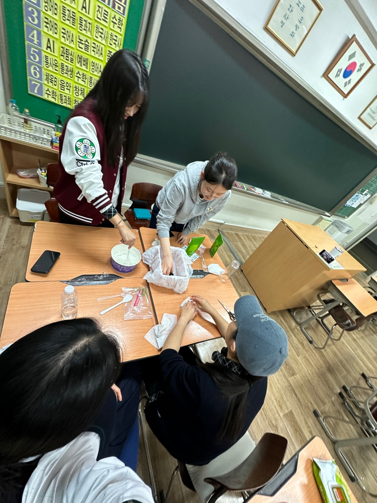
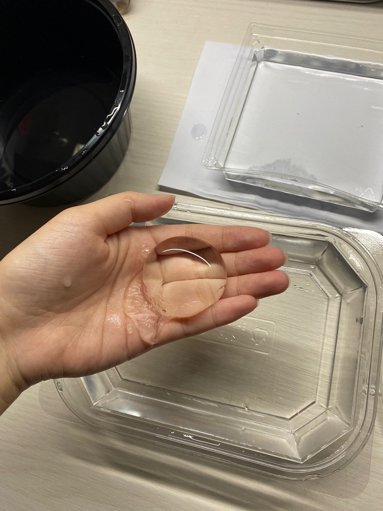

오호만들기 실험
[오호 만들기 실험동기]
해마다 급속도로 플라스틱 생산량이 증가하면서 플라스틱으로 인한 환경오염 문제가 심각해지고 있다.
이 문제의 해결책으로 만들어진 친환경 물병 오호를 직접 만들어 보면서 활용 가능한 정도를 확인하고 한계점과 그 해결방안을 모색해보고자
실험하게 되었다.
[오호 실험 배경지식]
오호는 영국 대학에서 만든 먹을 수 있는 친환경 물병으로 알긴산염 나트륨이라는 해초에서 추출한 재료로 만들어져 건강에도 좋을 뿐 아니라
자연히 분해되어 환경에도 좋은 영향을 준다. 현재 판매되고 있는 물병들은 플라스틱으로 만든 페트병에 담겨져 있다.
플라스틱은 환경오염의 주된
원인이기에 오호가 플라스틱 물병대신 판매된다면 플라스틱 생산을 줄여 환경보호에도 긍정적인 영향을 끼칠 것으로 예상된다.

[오호 실험과정]
*준비물:젖산칼슘, 알긴산 나트륨, 물, 용기, 숟가락
1. 물 500ml에 알긴산 나트륨 2g 을 넣어 젓는다.
2.녹은 알긴산 나트륨 용액을 30분 간 방치해둔다.
3.물 500ml에 젖산칼슘 2g을 녹여준다.
4.방치되었던 알긴산 나트륨 용액을 한 숟가락 정도 덜어서 젖산칼슘 용액에 넣어준다.
5.3분 이상 방치해두었다가 꺼낸다.

실험결과에 따른 한계점 및 대응방안
실험 결과, 오호의 막이 물을 완전히 담지 못하여 휴대가 불가능하다는 한계점을 발견하였다.
오호가 상용화되기에 어려울 것이라 예상하여 물병 이외에 오호가 활용될 수 있는 다른 방안들을 고안해보았다.
첫번째로 알약을 먹을 때 활용할 수 있다. 보통 알약을 먹을 때에 물과 알약을 함께 먹는다. 만약 알약과 물을 함께 알긴산 나트륨 막 안에 넣고 터질 것을 예방하기 위해 이중으로 막을 씌워 알약 오호를 만든다면, 알약 오호는 알약을 쉽게 먹을 수 있는 편리성을 가지고 있을 뿐만 아니라 알약 포장지 쓰레기까지 줄일 수 있어 친환경적이다.
두번째로 소스를 담을 용기로도 오호가 사용될 수 있다. 샐러드 소스 사용이 그 예시이다. 오호는 식용 가능하기에 샐러드를 먹을 때 소스가 담긴 오호를 그 위에 터뜨리기만 한다면 소스 용기를 사용을 줄일 수 있다.
실험을 통해 현재 오호의 활용도는 낮지만 활용 방법이 더욱 발전된다면 환경에 긍정적인 영향을 줄 가능성을 보았기에 실험 이후에도 오호가 실생활에 도입될 수 있는 다른 방안들을 찾아볼 예정이다.